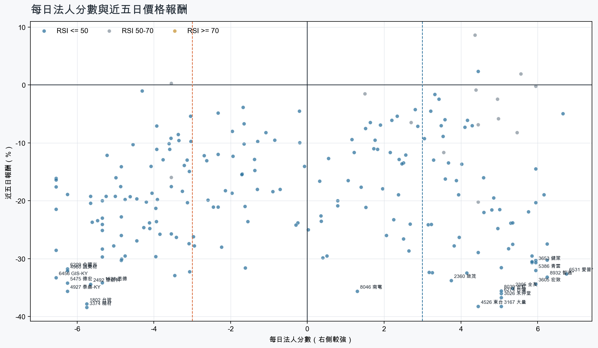
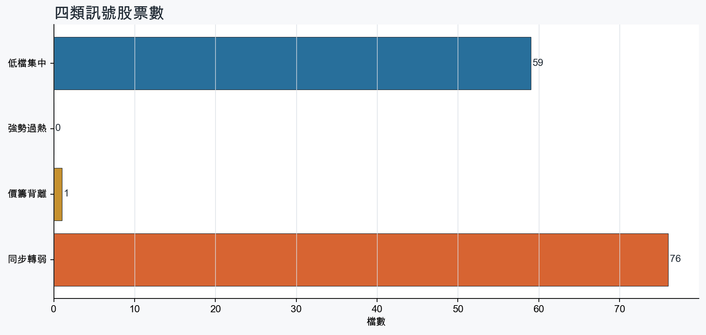
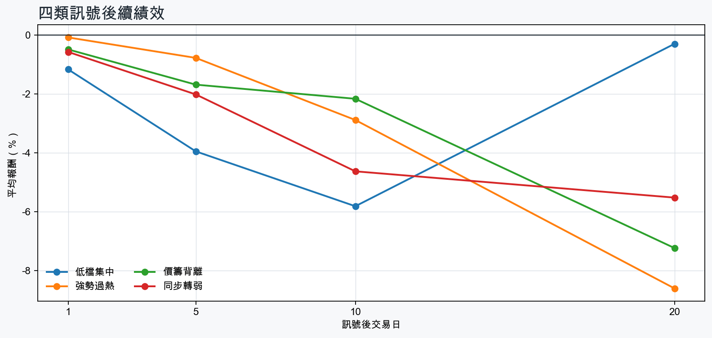

市場情緒偏空
近5日法人合計-9,783,415 張
篩選池上漲比例1.8%
籌碼好 / RSI低15 檔
籌碼差 / 價跌15 檔



EPS × PE VALUATION
法人常用的相對估值
顯示保守、基準與樂觀估值帶，不把單一數字包裝成精準目標價。
最新累計 EPS 依季數年化 × 同產業有效 P/E 的 Q25／中位數／Q75。排除本公司、非正 P/E，並以 1.5×IQR 排除離群值。估值帶是公開資料篩選值，不是法人目標價；未使用分析師預估 EPS。
MOOD × MONEY
情緒與籌碼雷達
熱度代表被討論程度；情緒分與法人方向分開計算。熱門不等於適合追價，樣本不足也不硬判多空。
| 股票 | 情緒 | 討論熱度 | 情緒 × 籌碼 | 情緒 × 基本面 |
|---|---|---|---|---|
| 8299 群聯低檔集中 | 情緒低迷 -76.8信心 77 | 1001 篇 / 75 留言 / 3 則新聞 | 法人布局、市場悲觀法人分 +4.8 | 基本面佳、情緒悲觀基本面分 +3.6 |
| 3374 精材同步轉弱 | 中性分歧 +0.0信心 30 | 510 篇 / 0 留言 / 3 則新聞 | 情籌混合法人分 -5.8 | 基本面與情緒分歧基本面分 +3.6 |
| 1802 台玻同步轉弱 | 偏多 +29.7信心 30 | 510 篇 / 0 留言 / 3 則新聞 | 熱門但法人撤退法人分 -5.8 | 基本面與情緒共振基本面分 +3.6 |
| 4927 泰鼎-KY同步轉弱 | 中性分歧 +0.0信心 30 | 510 篇 / 0 留言 / 3 則新聞 | 情籌混合法人分 -6.2 | 基本面與情緒分歧基本面分 -0.2 |
| 3189 景碩同步轉弱 | 偏空 -29.7信心 30 | 510 篇 / 0 留言 / 3 則新聞 | 情籌雙弱法人分 -4.0 | 基本面佳、情緒悲觀基本面分 +3.6 |
| 1303 南亞同步轉弱 | 中性分歧 -14.9信心 30 | 510 篇 / 0 留言 / 3 則新聞 | 情籌混合法人分 -3.1 | 基本面與情緒分歧基本面分 +3.6 |
| 1815 富喬同步轉弱 | 偏空 -29.7信心 30 | 510 篇 / 0 留言 / 3 則新聞 | 情籌雙弱法人分 -4.8 | 基本面佳、情緒悲觀基本面分 +3.6 |
| 5425 台半同步轉弱 | 偏多 +29.7信心 30 | 510 篇 / 0 留言 / 3 則新聞 | 熱門但法人撤退法人分 -6.5 | 基本面與情緒共振基本面分 +3.0 |
| 6139 亞翔低檔集中 | 偏多 +29.7信心 30 | 510 篇 / 0 留言 / 3 則新聞 | 情籌共振法人分 +6.2 | 基本面與情緒共振基本面分 +3.6 |
| 1528 恩德同步轉弱 | 中性分歧 +6.6信心 20 | 430 篇 / 0 留言 / 2 則新聞 | 情籌混合法人分 -5.3 | 基本面與情緒分歧基本面分 -0.8 |
| 5388 中磊低檔集中 | 偏多 +19.8信心 20 | 430 篇 / 0 留言 / 2 則新聞 | 情籌混合法人分 +6.7 | 基本面與情緒分歧基本面分 +3.0 |
| 6547 高端疫苗低檔集中 | 偏空 -19.8信心 20 | 430 篇 / 0 留言 / 2 則新聞 | 情籌混合法人分 +4.6 | 基本面與情緒分歧基本面分 +3.6 |
01
籌碼好 / RSI低
優先研究基本面；法人續買且價格止穩時，才適合分批觀察。
| 股票 / 確認狀態 | 每日法人分 | 浦男式近似 | 法人加速度 | RSI / 相對強弱 | 量價確認 | 融資融券 | 每週集保確認 | 基本面 | EPS × 同業 P/E 估值 | 情緒 / 情籌 | 近期消息 | 論壇討論 |
|---|---|---|---|---|---|---|---|---|---|---|---|---|
| 5388 中磊等待確認 · 99 分籌碼有訊號，但價格尚未確認 | +6.7法人 +2,977 張 / 5 天 | 接近 · 76法人籌碼偏多；法人買盤加速；買超具延續性；留意未站月線、中期均線未翻多 | +550 張近3日 +1,835 / 連續 +10 日 | 44.1相對大盤 +14.2% | 量比 1.69確認分 +3.0收盤跌破20日線；20日線低於60日線 | -%融資 - 張 / 融券 - 張 | -0.48 pp1000張 -0.53 pp | 單月營收年增 +63.6%；累計營收年增 +55.2%；2026 Q3 累計 EPS 4.342026 Q3 累計營益率 3.4%來源：公開資訊觀測站 | 基準 NT$ 99.30估值帶 69.67–223.9現價 67.40 · 低於估值帶 · 距基準 +47.3%2026 Q3 累計 EPS 4.34 → 年化 5.79通信網路同業 P/E 12.04／17.16／38.69 · n=62 · 信心中等以 Q3 累計 EPS 年化，不等同分析師全年預估來源：TWSE／TPEx 每日本益比 | 偏多 +19.8熱度 43 / 信心 20情籌混合 | 【11:58 即時新聞】中磊(5388)盤中小漲續守七字頭，短多關注法人買盤CMoney投資網誌 · 11/19【11:56 即時新聞】中磊(5388)盤中走強 外資投信同步買超延續CMoney投資網誌 · 11/17 | 近期沒有明確提及本股的論壇樣本 |
| 6139 亞翔等待確認 · 89 分籌碼有訊號，但價格尚未確認 | +6.2法人 +2,006 張 / 5 天 | 接近 · 65法人籌碼偏多；法人買盤加速；買超具延續性；留意未站月線、中期均線未翻多 | +1,368 張近3日 +1,711 / 連續 +6 日 | 33.1相對大盤 +1.4% | 量比 1.86確認分 +1.4收盤跌破20日線；20日線低於60日線 | -%融資 - 張 / 融券 - 張 | -0.66 pp1000張 -0.47 pp | 單月營收年增 +62.6%；累計營收年增 +53.4%；2026 Q3 累計 EPS 41.25仍需觀察下一期財報延續性來源：公開資訊觀測站 | 基準 NT$ 844.8估值帶 638.5–1,150現價 501.0 · 低於估值帶 · 距基準 +68.6%2026 Q3 累計 EPS 41.25 → 年化 55.00其他電子同業 P/E 11.61／15.36／20.90 · n=69 · 信心較高以 Q3 累計 EPS 年化，不等同分析師全年預估來源：TWSE／TPEx 每日本益比 | 偏多 +29.7熱度 51 / 信心 30情籌共振 | 【11:46 即時新聞】亞翔(6139) 股價走強，市場聚焦半導體統包訂單動能CMoney投資網誌 · 11/18亞翔在手訂單4400億元 今年大賺五個股本台灣好新聞 · 11/18 | 近期沒有明確提及本股的論壇樣本 |
| 5328 華容等待確認 · 83 分籌碼有訊號，但價格尚未確認 | +6.2法人 +2,386 張 / 5 天 | 未命中 · 55法人籌碼偏多；法人買盤加速；買超具延續性；留意未站月線、中期均線未翻多 | +940 張近3日 +1,666 / 連續 +6 日 | 22.4相對大盤 -17.9% | 量比 1.15確認分 -0.4收盤跌破20日線；20日線低於60日線；近20日弱於大盤 | -9.8%融資 -503 張 / 融券 +2 張 | +1.21 pp1000張 +1.21 pp | 單月營收年增 +46.7%；累計營收年增 +25.6%；2026 Q3 累計 EPS 0.582026 Q3 累計營益率 3.4%來源：公開資訊觀測站 | 基準 NT$ 13.16估值帶 9.26–18.85現價 29.55 · 高於估值帶 · 距基準 -55.5%2026 Q3 累計 EPS 0.58 → 年化 0.77電子零組件同業 P/E 11.97／17.02／24.38 · n=143 · 信心較高以 Q3 累計 EPS 年化，不等同分析師全年預估來源：TWSE／TPEx 每日本益比 | 樣本不足 +0.0熱度 0 / 信心 0情緒樣本不足 | 近期沒有通過股票語境篩選的新聞 | 近期沒有明確提及本股的論壇樣本 |
| 6547 高端疫苗等待確認 · 85 分籌碼有訊號，但價格尚未確認 | +4.6法人 +2,046 張 / 5 天 | 接近 · 65法人籌碼偏多；法人買盤加速；買超具延續性；留意未站月線、中期均線未翻多 | +1,294 張近3日 +1,758 / 連續 +7 日 | 27.7相對大盤 +0.3% | 量比 1.77確認分 +1.7收盤跌破20日線；20日線低於60日線 | -2.2%融資 -274 張 / 融券 +7 張 | -0.33 pp1000張 -0.11 pp | 單月營收年增 +43.2%；累計營收年增 +51.5%；2026 Q3 累計 EPS 0.31仍需觀察下一期財報延續性來源：公開資訊觀測站 | 基準 NT$ 5.39估值帶 4.27–6.77現價 39.35 · 高於估值帶 · 距基準 -86.3%2026 Q3 累計 EPS 0.31 → 年化 0.41生技醫療同業 P/E 10.32／13.03／16.38 · n=83 · 信心較低以 Q3 累計 EPS 年化，不等同分析師全年預估；交易所無有效本益比，無法交叉檢核近四季 EPS來源：TWSE／TPEx 每日本益比 | 偏空 -19.8熱度 43 / 信心 20情籌混合 | 6547 高端疫苗 - 美民主黨大勝 生技醫療基金後市看俏 - 日報 - 工商時報 ... - 股市爆料同學會CMoney · 11/20《周法人賣超》11/9-11/13排行榜前三名：外資大賣康霈*(-2536張)、鑽石投資(-1265張)、高端疫苗(-1189張)生技投資第一站-Genet觀點 · 11/14 | 近期沒有明確提及本股的論壇樣本 |
| 8096 擎亞等待確認 · 81 分籌碼有訊號，但價格尚未確認 | +6.2法人 +2,168 張 / 5 天 | 未命中 · 55法人籌碼偏多；法人買盤加速；買超具延續性；留意未站月線、中期均線未翻多 | +450 張近3日 +1,334 / 連續 +6 日 | 24.9相對大盤 -11.5% | 量比 1.44確認分 -0.4收盤跌破20日線；20日線低於60日線；近20日弱於大盤 | -11.1%融資 -1,216 張 / 融券 -12 張 | -0.17 pp1000張 -0.27 pp | 單月營收年增 +370.3%；累計營收年增 +122.7%；2026 Q3 累計 EPS 8.512026 Q3 累計營益率 2.7%來源：公開資訊觀測站 | 基準 NT$ 90.66估值帶 68.53–127.8現價 53.10 · 低於估值帶 · 距基準 +70.7%2026 Q3 累計 EPS 8.51 → 年化 11.35電子通路同業 P/E 6.04／7.99／11.26 · n=27 · 信心較高以 Q3 累計 EPS 年化，不等同分析師全年預估來源：TWSE／TPEx 每日本益比 | 樣本不足 +0.0熱度 0 / 信心 0情緒樣本不足 | 近期沒有通過股票語境篩選的新聞 | 近期沒有明確提及本股的論壇樣本 |
| 8932 智通*等待確認 · 79 分籌碼有訊號，但價格尚未確認 | +6.2法人 +5,441 張 / 5 天 | 未命中 · 50法人籌碼偏多；法人買盤加速；買超具延續性；留意未站月線、中期均線未翻多 | +1,727 張近3日 +3,641 / 連續 +6 日 | 16.0相對大盤 -19.2% | 量比 2.91確認分 -1.1收盤跌破20日線；20日線低於60日線；近20日弱於大盤 | -18.9%融資 -10,568 張 / 融券 -7 張 | +0.13 pp1000張 +0.38 pp | 單月營收年增 +18.2%；累計營收年增 +14.5%；2026 Q3 累計 EPS 1.60仍需觀察下一期財報延續性來源：公開資訊觀測站 | 基準 NT$ 32.21估值帶 24.83–53.74現價 51.40 · 估值帶內 · 距基準 -37.3%2026 Q3 累計 EPS 1.60 → 年化 2.13數位雲端同業 P/E 11.64／15.10／25.19 · n=29 · 信心較高以 Q3 累計 EPS 年化，不等同分析師全年預估來源：TWSE／TPEx 每日本益比 | 樣本不足 +0.0熱度 0 / 信心 0情緒樣本不足 | 近期沒有通過股票語境篩選的新聞 | 近期沒有明確提及本股的論壇樣本 |
| 2540 愛山林等待確認 · 81 分籌碼有訊號，但價格尚未確認 | +3.3法人 +2,520 張 / 5 天 | 接近 · 75法人籌碼偏多；法人買盤加速；買超具延續性；留意未站月線、中期均線未翻多 | +475 張近3日 +1,585 / 連續 +8 日 | 49.4相對大盤 +22.4% | 量比 1.78確認分 +1.6收盤跌破20日線；20日線低於60日線；流動性偏低 | -%融資 - 張 / 融券 - 張 | -0.01 pp1000張 -0.13 pp | 單月營收年增 +360.4%；累計營收年增 +21.2%；2026 Q3 累計 EPS 1.08仍需觀察下一期財報延續性來源：公開資訊觀測站 | 基準 NT$ 12.24估值帶 8.41–18.55現價 45.15 · 高於估值帶 · 距基準 -72.9%2026 Q3 累計 EPS 1.08 → 年化 1.44建材營造同業 P/E 5.84／8.50／12.88 · n=65 · 信心較高以 Q3 累計 EPS 年化，不等同分析師全年預估來源：TWSE／TPEx 每日本益比 | 樣本不足 +0.0熱度 0 / 信心 0情緒樣本不足 | 近期沒有通過股票語境篩選的新聞 | 近期沒有明確提及本股的論壇樣本 |
| 5386 青雲等待確認 · 81 分籌碼有訊號，但價格尚未確認 | +6.0法人 +1,583 張 / 5 天 | 未命中 · 55法人籌碼偏多；法人買盤加速；買超具延續性；留意未站月線、中期均線未翻多 | +850 張近3日 +1,286 / 連續 +6 日 | 2.7相對大盤 -23.9% | 量比 2.31確認分 -0.4收盤跌破20日線；20日線低於60日線；近20日弱於大盤 | -4.5%融資 -65 張 / 融券 +7 張 | +0.00 pp1000張 +0.00 pp | 單月營收年增 +201.8%；累計營收年增 +537.9%；2026 Q3 累計 EPS 49.19仍需觀察下一期財報延續性來源：公開資訊觀測站 | 基準 NT$ 788.4估值帶 610.0–1,028現價 124.0 · 低於估值帶 · 距基準 +535.8%2026 Q3 累計 EPS 49.19 → 年化 65.59電腦及週邊同業 P/E 9.30／12.02／15.67 · n=82 · 信心較高以 Q3 累計 EPS 年化，不等同分析師全年預估來源：TWSE／TPEx 每日本益比 | 樣本不足 +0.0熱度 0 / 信心 0情緒樣本不足 | 近期沒有通過股票語境篩選的新聞 | 近期沒有明確提及本股的論壇樣本 |
| 8299 群聯等待確認 · 78 分籌碼有訊號，但價格尚未確認 | +4.8法人 +1,661 張 / 4 天 | 未命中 · 55法人籌碼偏多；法人買盤加速；買超具延續性；留意未站月線、中期均線未翻多 | +486 張近3日 +1,175 / 連續 +2 日 | 24.9相對大盤 -6.6% | 量比 2.28確認分 -0.1收盤跌破20日線；20日線低於60日線；近20日弱於大盤 | -3.6%融資 -312 張 / 融券 +15 張 | +0.09 pp1000張 -0.46 pp | 單月營收年增 +346.3%；累計營收年增 +297.8%；2026 Q3 累計 EPS 325.49仍需觀察下一期財報延續性來源：公開資訊觀測站 | 基準 NT$ 7,321估值帶 4,900–11,097現價 1,320 · 低於估值帶 · 距基準 +454.6%2026 Q3 累計 EPS 325.5 → 年化 434.0半導體同業 P/E 11.29／16.87／25.57 · n=155 · 信心較高以 Q3 累計 EPS 年化，不等同分析師全年預估來源：TWSE／TPEx 每日本益比 | 情緒低迷 -76.8熱度 100 / 信心 77法人布局、市場悲觀 | 南亞科跌停、華邦電見8字頭！群聯、旺宏、力積電...記憶體全垮了老牌法人示警「3變數」：報價Q1凍漲- 上市櫃旺得富理財網 · 11/208299 群聯- 【00991A】11/20 操作日報｜單日重挫近一成，大舉減碼國巨- 股市爆料同學會CMoney · 11/20 | [新聞] 美光桃園勞資爭議難解 群聯潘健成「怕了！」不去桃園設PTT Stock · 11-20 · 75 留言 |
| 9939 宏全等待確認 · 86 分籌碼有訊號，但價格尚未確認 | +4.3法人 +2,397 張 / 4 天 | 接近 · 70法人籌碼偏多；法人買盤加速；買超具延續性；留意未站月線、中期均線未翻多 | +1,068 張近3日 +1,722 / 連續 -1 日 | 31.1相對大盤 +12.1% | 量比 1.37確認分 +3.0收盤跌破20日線；20日線低於60日線 | -%融資 - 張 / 融券 - 張 | -1.95 pp1000張 -1.56 pp | 單月營收年增 +18.3%；累計營收年增 +4.5%；2026 Q3 累計 EPS 9.84仍需觀察下一期財報延續性來源：公開資訊觀測站 | 基準 NT$ 151.4估值帶 126.7–216.6現價 113.0 · 低於估值帶 · 距基準 +34.0%2026 Q3 累計 EPS 9.84 → 年化 13.12其他同業 P/E 9.66／11.54／16.51 · n=65 · 信心較高以 Q3 累計 EPS 年化，不等同分析師全年預估來源：TWSE／TPEx 每日本益比 | 樣本不足 +9.9熱度 31 / 信心 10情緒樣本不足 | 【12:52 即時新聞】宏全(9939)股價走弱，市場聚焦日本飲料包材合作布局CMoney投資網誌 · 11/20 | 近期沒有明確提及本股的論壇樣本 |
| 2451 創見等待確認 · 78 分籌碼有訊號，但價格尚未確認 | +3.0法人 +2,160 張 / 4 天 | 接近 · 59法人籌碼偏多；法人買盤加速；買超具延續性；留意未站月線、中期均線未翻多 | +2,666 張近3日 +2,146 / 連續 +4 日 | 10.6相對大盤 -0.1% | 量比 2.11確認分 +1.0收盤跌破20日線；20日線低於60日線 | -%融資 - 張 / 融券 - 張 | +0.84 pp1000張 +1.48 pp | 單月營收年增 +191.6%；累計營收年增 +344.5%；2026 Q3 累計 EPS 62.74仍需觀察下一期財報延續性來源：公開資訊觀測站 | 基準 NT$ 1,411估值帶 944.5–2,139現價 211.0 · 低於估值帶 · 距基準 +568.8%2026 Q3 累計 EPS 62.74 → 年化 83.65半導體同業 P/E 11.29／16.87／25.57 · n=155 · 信心較高以 Q3 累計 EPS 年化，不等同分析師全年預估來源：TWSE／TPEx 每日本益比 | 樣本不足 +0.0熱度 31 / 信心 10情緒樣本不足 | 【11:16 即時新聞】創見(2451)盤中小跌守穩，高檔整理搭配估值關注CMoney投資網誌 · 11/20 | 近期沒有明確提及本股的論壇樣本 |
| 2542 興富發等待確認 · 74 分籌碼有訊號，但價格尚未確認 | +3.6法人 +8,794 張 / 5 天 | 接近 · 63法人籌碼偏多；買超具延續性；明顯強於大盤；留意未站月線、中期均線未翻多 | -1,663 張近3日 +3,899 / 連續 +8 日 | 28.2相對大盤 +13.4% | 量比 1.34確認分 +0.0收盤跌破20日線；20日線低於60日線；法人買盤減速 | -%融資 - 張 / 融券 - 張 | +0.08 pp1000張 +0.30 pp | 單月營收年增 +31.7%；累計營收年增 +185.5%；2026 Q3 累計 EPS 3.83仍需觀察下一期財報延續性來源：公開資訊觀測站 | 基準 NT$ 43.61估值帶 29.62–65.88現價 36.10 · 估值帶內 · 距基準 +20.8%2026 Q3 累計 EPS 3.83 → 年化 5.11建材營造同業 P/E 5.80／8.54／12.90 · n=64 · 信心較高以 Q3 累計 EPS 年化，不等同分析師全年預估來源：TWSE／TPEx 每日本益比 | 樣本不足 +0.0熱度 0 / 信心 0情緒樣本不足 | 近期沒有通過股票語境篩選的新聞 | 近期沒有明確提及本股的論壇樣本 |
| 8422 可寧衛*等待確認 · 75 分籌碼有訊號，但價格尚未確認 | +3.7法人 +4,828 張 / 5 天 | 接近 · 65法人籌碼偏多；法人買盤加速；買超具延續性；留意未站月線、中期均線未翻多 | +559 張近3日 +2,904 / 連續 +6 日 | 22.1相對大盤 +2.0% | 量比 1.93確認分 +0.0收盤跌破20日線；20日線低於60日線 | -%融資 - 張 / 融券 - 張 | +0.51 pp1000張 +0.17 pp | 單月營收年增 +100.9%；累計營收年增 +46.7%；2026 Q3 累計 EPS 0.97仍需觀察下一期財報延續性來源：公開資訊觀測站 | 基準 NT$ 15.47估值帶 11.55–17.14現價 20.55 · 高於估值帶 · 距基準 -24.7%2026 Q3 累計 EPS 0.97 → 年化 1.29綠能環保同業 P/E 8.93／11.96／13.25 · n=28 · 信心較高以 Q3 累計 EPS 年化，不等同分析師全年預估來源：TWSE／TPEx 每日本益比 | 樣本不足 +0.0熱度 0 / 信心 0情緒樣本不足 | 近期沒有通過股票語境篩選的新聞 | 近期沒有明確提及本股的論壇樣本 |
| 3706 神達等待確認 · 76 分籌碼有訊號，但價格尚未確認 | +6.0法人 +17,698 張 / 5 天 | 未命中 · 55法人籌碼偏多；法人買盤加速；買超具延續性；留意未站月線、中期均線未翻多 | +6,137 張近3日 +11,966 / 連續 +6 日 | 14.5相對大盤 -11.0% | 量比 1.63確認分 -1.0收盤跌破20日線；20日線低於60日線；近20日弱於大盤 | -%融資 - 張 / 融券 - 張 | -0.52 pp1000張 -0.40 pp | 單月營收年增 +36.4%；累計營收年增 +54.5%；2026 Q3 累計 EPS 3.772026 Q3 累計營益率 4.0%來源：公開資訊觀測站 | 基準 NT$ 60.42估值帶 46.75–78.77現價 53.00 · 估值帶內 · 距基準 +14.0%2026 Q3 累計 EPS 3.77 → 年化 5.03電腦及週邊同業 P/E 9.30／12.02／15.67 · n=82 · 信心較高以 Q3 累計 EPS 年化，不等同分析師全年預估來源：TWSE／TPEx 每日本益比 | 樣本不足 +0.0熱度 31 / 信心 10情緒樣本不足 | 3706 神達- 神達擬現增1.2億股案，補充每股發行價為52元等事宜- 股市爆料同學會CMoney · 11/20 | 近期沒有明確提及本股的論壇樣本 |
| 1229 聯華等待確認 · 76 分籌碼有訊號，但價格尚未確認 | +4.5法人 +7,785 張 / 5 天 | 接近 · 65法人籌碼偏多；買超具延續性；明顯強於大盤；留意未站月線、中期均線未翻多 | -360 張近3日 +3,755 / 連續 +6 日 | 38.6相對大盤 +19.9% | 量比 2.18確認分 +0.8收盤跌破20日線；20日線低於60日線；法人買盤減速 | -%融資 - 張 / 融券 - 張 | -0.08 pp1000張 -0.15 pp | 單月營收年增 +8.0%；2026 Q3 累計 EPS 2.67；2026 Q3 累計營益率 22.0%累計營收年增 -3.7%來源：公開資訊觀測站 | 基準 NT$ 53.97估值帶 40.73–64.90現價 38.65 · 低於估值帶 · 距基準 +39.6%2026 Q3 累計 EPS 2.67 → 年化 3.56食品工業同業 P/E 11.44／15.16／18.23 · n=24 · 信心較高以 Q3 累計 EPS 年化，不等同分析師全年預估來源：TWSE／TPEx 每日本益比 | 中性分歧 +0.0熱度 43 / 信心 20情籌混合 | 【09:39 即時新聞】聯華(1229)盤中小跌守近39元，短線買盤動能受關注CMoney投資網誌 · 11/20【10:48 即時新聞】聯華(1229)盤中小漲，中低價穩健股吸引資金關注CMoney投資網誌 · 11/19 | 近期沒有明確提及本股的論壇樣本 |
02
籌碼好 / RSI高
趨勢強但不追價，等待量縮、RSI降溫或回測支撐。
今日沒有股票同時符合本組的完整條件。
03
籌碼差 / 股價上漲
可能是事件行情或軋空；沒有籌碼改善前避免追高。
| 股票 / 確認狀態 | 每日法人分 | 浦男式近似 | 法人加速度 | RSI / 相對強弱 | 量價確認 | 融資融券 | 每週集保確認 | 基本面 | EPS × 同業 P/E 估值 | 情緒 / 情籌 | 近期消息 | 論壇討論 |
|---|---|---|---|---|---|---|---|---|---|---|---|---|
| 6199 天品風險警示 · 52 分背離警戒，避免追高 | -3.5法人 -2,063 張 / 3 天 | 接近 · 80站上月線；中期均線偏多；買超具延續性；留意法人籌碼偏弱、法人買盤未加速 | -4,666 張近3日 -2,918 / 連續 -2 日 | 66.7相對大盤 +36.5% | 量比 1.37確認分 +1.9法人買盤減速；融資單日增幅偏高 | +10.0%融資 +300 張 / 融券 -48 張 | +1.12 pp1000張 -4.56 pp | 單月營收年增 +143.5%；累計營收年增 +369.0%；2026 Q3 累計 EPS 11.60仍需觀察下一期財報延續性來源：公開資訊觀測站 | 基準 NT$ 176.2估值帶 149.4–255.4現價 169.5 · 估值帶內 · 距基準 +3.9%2026 Q3 累計 EPS 11.60 → 年化 15.47其他同業 P/E 9.66／11.39／16.51 · n=65 · 信心較高以 Q3 累計 EPS 年化，不等同分析師全年預估來源：TWSE／TPEx 每日本益比 | 樣本不足 +0.0熱度 31 / 信心 10情緒樣本不足 | 【10:43 即時新聞】天品(6199)股價小跌整理，AI液冷與生命服務雙主軌受關注CMoney投資網誌 · 11/20 | 近期沒有明確提及本股的論壇樣本 |
04
籌碼差 / 股價下跌
籌碼與價格同弱，原則上迴避，等待法人與大戶同時回補。
| 股票 / 確認狀態 | 每日法人分 | 浦男式近似 | 法人加速度 | RSI / 相對強弱 | 量價確認 | 融資融券 | 每週集保確認 | 基本面 | EPS × 同業 P/E 估值 | 情緒 / 情籌 | 近期消息 | 論壇討論 |
|---|---|---|---|---|---|---|---|---|---|---|---|---|
| 2492 華新科風險警示 · 17 分迴避，等待籌碼翻正 | -5.7法人 -10,366 張 / 1 天 | 未命中 · 27法人買盤加速；基本面有支撐；流動性足夠；留意未站月線、中期均線未翻多 | +5,014 張近3日 -966 / 連續 -1 日 | 17.2相對大盤 -25.9% | 量比 0.41確認分 -2.4收盤跌破20日線；20日線低於60日線；近20日弱於大盤；成交量不足 | -%融資 - 張 / 融券 - 張 | -4.64 pp1000張 -4.23 pp | 單月營收年增 +57.1%；累計營收年增 +28.7%；2026 Q3 累計 EPS 9.66仍需觀察下一期財報延續性來源：公開資訊觀測站 | 基準 NT$ 220.1估值帶 154.6–323.6現價 187.5 · 估值帶內 · 距基準 +17.4%2026 Q3 累計 EPS 9.66 → 年化 12.88電子零組件同業 P/E 12.00／17.09／25.12 · n=144 · 信心較高以 Q3 累計 EPS 年化，不等同分析師全年預估來源：TWSE／TPEx 每日本益比 | 樣本不足 +0.0熱度 0 / 信心 0情緒樣本不足 | 近期沒有通過股票語境篩選的新聞 | 近期沒有明確提及本股的論壇樣本 |
| 3374 精材風險警示 · 15 分迴避，等待籌碼翻正 | -5.8法人 -12,772 張 / 0 天 | 未命中 · 20基本面有支撐；流動性足夠；留意未站月線、中期均線未翻多 | -2,328 張近3日 -6,946 / 連續 -5 日 | 34.0相對大盤 -7.9% | 量比 0.32確認分 -5.7收盤跌破20日線；20日線低於60日線；近20日弱於大盤；成交量不足；法人買盤減速 | -4.7%融資 -945 張 / 融券 +142 張 | +4.27 pp1000張 +5.52 pp | 單月營收年增 +39.0%；累計營收年增 +32.4%；2026 Q3 累計 EPS 5.12仍需觀察下一期財報延續性來源：公開資訊觀測站 | 基準 NT$ 109.4估值帶 75.37–169.4現價 319.5 · 高於估值帶 · 距基準 -65.8%2026 Q3 累計 EPS 5.12 → 年化 6.83半導體同業 P/E 11.04／16.03／24.81 · n=154 · 信心較高以 Q3 累計 EPS 年化，不等同分析師全年預估來源：TWSE／TPEx 每日本益比 | 中性分歧 +0.0熱度 51 / 信心 30情籌混合 | 精材 精材 股價換雞排CMoney · 11/20精材接下台積電封裝委外，2029 年量產後要賣多少才會賺錢？口袋證券 · 11/18 | 近期沒有明確提及本股的論壇樣本 |
| 1802 台玻風險警示 · 25 分迴避，等待籌碼翻正 | -5.8法人 -106,176 張 / 0 天 | 未命中 · 46中期均線偏多；相對大盤偏強；基本面有支撐；留意未站月線、法人籌碼偏弱 | -34,661 張近3日 -73,720 / 連續 -6 日 | 42.6相對大盤 +2.0% | 量比 0.36確認分 -3.9收盤跌破20日線；成交量不足；法人買盤減速 | -%融資 - 張 / 融券 - 張 | +9.84 pp1000張 +9.95 pp | 單月營收年增 +56.5%；累計營收年增 +22.6%；2026 Q3 累計 EPS 1.57仍需觀察下一期財報延續性來源：公開資訊觀測站 | 不適用同產業有效 P/E 樣本不足（4 檔） | 偏多 +29.7熱度 51 / 信心 30熱門但法人撤退 | 台玻（1802）做什麼？ 10 月營收創歷史新高，股價卻連5 天觸跌停？AI玻纖布成長動能全解析｜豐雲學堂2026 年 11 月永豐金證券 · 11/20利多出盡？台玻獲利創高仍成三大法人提款重災區 「這檔面板」先被009816剔除再入賣超榜Yahoo股市 · 11/19 | 近期沒有明確提及本股的論壇樣本 |
| 6209 今國光風險警示 · 19 分迴避，等待籌碼翻正 | -6.2法人 -5,862 張 / 0 天 | 未命中 · 27法人買盤加速；基本面有支撐；流動性足夠；留意未站月線、中期均線未翻多 | +317 張近3日 -2,410 / 連續 -5 日 | 27.0相對大盤 -21.7% | 量比 0.29確認分 -2.4收盤跌破20日線；20日線低於60日線；近20日弱於大盤；成交量不足 | -%融資 - 張 / 融券 - 張 | -1.33 pp1000張 -1.88 pp | 單月營收年增 +48.9%；累計營收年增 +68.2%；2026 Q3 累計 EPS 2.54仍需觀察下一期財報延續性來源：公開資訊觀測站 | 基準 NT$ 58.45估值帶 35.80–82.57現價 54.60 · 估值帶內 · 距基準 +7.1%2026 Q3 累計 EPS 2.54 → 年化 3.39光電同業 P/E 10.57／17.26／24.38 · n=70 · 信心較高以 Q3 累計 EPS 年化，不等同分析師全年預估來源：TWSE／TPEx 每日本益比 | 樣本不足 +9.9熱度 31 / 信心 10情緒樣本不足 | 今國光布局未來十年! CPO送樣挑戰明年量產| 科技非凡新聞台 · 11/20 | 近期沒有明確提及本股的論壇樣本 |
| 4927 泰鼎-KY風險警示 · 22 分迴避，等待籌碼翻正 | -6.2法人 -12,639 張 / 0 天 | 未命中 · 28中期均線偏多；法人買盤加速；流動性足夠；留意未站月線、法人籌碼偏弱 | +3,850 張近3日 -5,868 / 連續 -6 日 | 35.0相對大盤 -7.7% | 量比 0.35確認分 -2.3收盤跌破20日線；近20日弱於大盤；成交量不足 | -%融資 - 張 / 融券 - 張 | +11.97 pp1000張 +13.53 pp | 單月營收年增 +87.0%；累計營收年增 +16.8%2026 Q3 累計 EPS -6.06；2026 Q3 累計營益率 -14.3%來源：公開資訊觀測站 | 不適用年化 EPS 非正數，不適合使用本益比估值 | 中性分歧 +0.0熱度 51 / 信心 30情籌混合 | 4927 泰鼎-KY - 熱騰騰的泰鼎10月自結 - 股市爆料同學會CMoney · 11/20盈餘：泰鼎-KY(4927)結算10月歸屬母公司淨利1.22億元，EPS 0.46元富聯網 · 11/20 | 近期沒有明確提及本股的論壇樣本 |
| 3264 欣銓風險警示 · 0 分迴避，等待籌碼翻正 | -4.8法人 -5,906 張 / 2 天 | 未命中 · 20基本面有支撐；流動性足夠；留意未站月線、中期均線未翻多 | -2,270 張近3日 -3,194 / 連續 +1 日 | 26.4相對大盤 -21.7% | 量比 0.54確認分 -6.3收盤跌破20日線；20日線低於60日線；近20日弱於大盤；成交量不足；法人買盤減速 | -1.6%融資 -218 張 / 融券 +22 張 | -7.91 pp1000張 -6.54 pp | 單月營收年增 +47.9%；累計營收年增 +36.8%；2026 Q3 累計 EPS 7.49仍需觀察下一期財報延續性來源：公開資訊觀測站 | 基準 NT$ 168.5估值帶 110.3–255.4現價 136.0 · 估值帶內 · 距基準 +23.9%2026 Q3 累計 EPS 7.49 → 年化 9.99半導體同業 P/E 11.05／16.87／25.57 · n=155 · 信心較高以 Q3 累計 EPS 年化，不等同分析師全年預估來源：TWSE／TPEx 每日本益比 | 樣本不足 +0.0熱度 31 / 信心 10情緒樣本不足 | 3264 欣銓- 【00992A】11/20 操作日報｜淨值重挫，經理人大砍矽力-KY - 股市爆料同學會CMoney · 11/20 | 近期沒有明確提及本股的論壇樣本 |
| 5475 德宏風險警示 · 8 分迴避，等待籌碼翻正 | -6.2法人 -2,864 張 / 0 天 | 未命中 · 20基本面有支撐；流動性足夠；留意未站月線、中期均線未翻多 | -492 張近3日 -1,451 / 連續 -5 日 | 32.7相對大盤 -7.7% | 量比 0.25確認分 -6.3收盤跌破20日線；20日線低於60日線；近20日弱於大盤；成交量不足；法人買盤減速 | -%融資 +0 張 / 融券 +0 張 | +3.90 pp1000張 +2.32 pp | 單月營收年增 +388.1%；累計營收年增 +201.8%；2026 Q3 累計 EPS 3.44仍需觀察下一期財報延續性來源：公開資訊觀測站 | 基準 NT$ 78.07估值帶 54.90–111.8現價 135.5 · 高於估值帶 · 距基準 -42.4%2026 Q3 累計 EPS 3.44 → 年化 4.59電子零組件同業 P/E 11.97／17.02／24.38 · n=143 · 信心較高以 Q3 累計 EPS 年化，不等同分析師全年預估來源：TWSE／TPEx 每日本益比 | 樣本不足 -9.9熱度 31 / 信心 10情緒樣本不足 | 玻纖布全軍覆沒！台玻連4跌重挫31%今再吞一根 南亞、德宏、建榮、富喬齊鎖跌停Yahoo股市 · 11/19 | 近期沒有明確提及本股的論壇樣本 |
| 6456 GIS-KY風險警示 · 0 分迴避，等待籌碼翻正 | -6.5法人 -17,263 張 / 0 天 | 未命中 · 15中期均線偏多；流動性足夠；留意未站月線、法人籌碼偏弱 | -4,603 張近3日 -11,295 / 連續 -6 日 | 34.8相對大盤 -10.5% | 量比 0.12確認分 -6.3收盤跌破20日線；近20日弱於大盤；成交量不足；法人買盤減速 | -%融資 - 張 / 融券 - 張 | +2.73 pp1000張 +3.87 pp | 單月營收年增 +167.5%累計營收年增 -1.8%；2026 Q3 累計 EPS -5.93；2026 Q3 累計營益率 -4.3%來源：公開資訊觀測站 | 不適用年化 EPS 非正數，不適合使用本益比估值 | 樣本不足 +0.0熱度 0 / 信心 0情緒樣本不足 | 近期沒有通過股票語境篩選的新聞 | 近期沒有明確提及本股的論壇樣本 |
| 8150 南茂風險警示 · 21 分迴避，等待籌碼翻正 | -5.0法人 -5,804 張 / 0 天 | 未命中 · 32法人買盤加速；基本面有支撐；流動性足夠；留意未站月線、中期均線未翻多 | +3,110 張近3日 -2,436 / 連續 -7 日 | 28.6相對大盤 -13.2% | 量比 0.83確認分 -1.8收盤跌破20日線；20日線低於60日線；近20日弱於大盤 | -%融資 - 張 / 融券 - 張 | -5.77 pp1000張 -5.27 pp | 單月營收年增 +30.9%；累計營收年增 +30.5%；2026 Q3 累計 EPS 3.89仍需觀察下一期財報延續性來源：公開資訊觀測站 | 基準 NT$ 87.50估值帶 57.31–132.6現價 61.00 · 估值帶內 · 距基準 +43.4%2026 Q3 累計 EPS 3.89 → 年化 5.19半導體同業 P/E 11.05／16.87／25.57 · n=155 · 信心較高以 Q3 累計 EPS 年化，不等同分析師全年預估來源：TWSE／TPEx 每日本益比 | 樣本不足 +0.0熱度 0 / 信心 0情緒樣本不足 | 近期沒有通過股票語境篩選的新聞 | 近期沒有明確提及本股的論壇樣本 |
| 4960 誠美材風險警示 · 11 分迴避，等待籌碼翻正 | -6.2法人 -11,532 張 / 0 天 | 未命中 · 22中期均線偏多；法人買盤加速；流動性足夠；留意未站月線、法人籌碼偏弱 | +2,612 張近3日 -4,988 / 連續 -6 日 | 34.8相對大盤 -6.1% | 量比 0.22確認分 -1.9收盤跌破20日線；近20日弱於大盤；成交量不足 | -%融資 - 張 / 融券 - 張 | +2.84 pp1000張 +2.78 pp | 尚無明確成長訊號單月營收年增 -23.6%；累計營收年增 -11.7%；2026 Q3 累計 EPS -1.01來源：公開資訊觀測站 | 不適用年化 EPS 非正數，不適合使用本益比估值 | 樣本不足 +0.0熱度 0 / 信心 0情緒樣本不足 | 近期沒有通過股票語境篩選的新聞 | 近期沒有明確提及本股的論壇樣本 |
| 3189 景碩風險警示 · 6 分迴避，等待籌碼翻正 | -4.0法人 -8,321 張 / 2 天 | 未命中 · 20基本面有支撐；流動性足夠；留意未站月線、中期均線未翻多 | -8,173 張近3日 -8,199 / 連續 +1 日 | 17.2相對大盤 -29.2% | 量比 0.13確認分 -6.3收盤跌破20日線；20日線低於60日線；近20日弱於大盤；成交量不足；法人買盤減速 | -%融資 - 張 / 融券 - 張 | -3.07 pp1000張 -3.19 pp | 單月營收年增 +49.0%；累計營收年增 +35.4%；2026 Q3 累計 EPS 8.38仍需觀察下一期財報延續性來源：公開資訊觀測站 | 基準 NT$ 179.1估值帶 123.3–277.2現價 470.0 · 高於估值帶 · 距基準 -61.9%2026 Q3 累計 EPS 8.38 → 年化 11.17半導體同業 P/E 11.04／16.03／24.81 · n=154 · 信心較高以 Q3 累計 EPS 年化，不等同分析師全年預估來源：TWSE／TPEx 每日本益比 | 偏空 -29.7熱度 51 / 信心 30情籌雙弱 | 景碩（3189）做什麼？獲輝達逾10億美元投資、股價腰斬後亮燈漲停，BT、ABF載板業務全解析｜豐雲學堂2026 年 11 月永豐金證券 · 11/18台股連2日狂殺逾4200點！欣興、景碩、台光電同步跌停江國中曝3天變盤關鍵、陳龍急喊「先別動」Yahoo股市 · 11/20 | 近期沒有明確提及本股的論壇樣本 |
| 1303 南亞風險警示 · 33 分迴避，等待籌碼翻正 | -3.1法人 -43,968 張 / 1 天 | 未命中 · 37中期均線偏多；法人買盤加速；基本面有支撐；留意未站月線、法人籌碼偏弱 | +16,453 張近3日 -15,071 / 連續 +1 日 | 32.7相對大盤 -8.4% | 量比 0.50確認分 -2.4收盤跌破20日線；近20日弱於大盤；成交量不足 | -%融資 - 張 / 融券 - 張 | -0.50 pp1000張 -0.62 pp | 單月營收年增 +64.6%；累計營收年增 +30.5%；2026 Q3 累計 EPS 10.07仍需觀察下一期財報延續性來源：公開資訊觀測站 | 基準 NT$ 184.1估值帶 160.4–258.2現價 206.0 · 估值帶內 · 距基準 -10.6%2026 Q3 累計 EPS 10.07 → 年化 13.43塑膠工業同業 P/E 11.95／13.71／19.23 · n=9 · 信心中等以 Q3 累計 EPS 年化，不等同分析師全年預估來源：TWSE／TPEx 每日本益比 | 中性分歧 -14.9熱度 51 / 信心 30情籌混合 | 「黃仁勳調查」衝擊南亞科！一度跌停 買在8月高點者一張已虧逾30萬元Yahoo股市 · 11/20焦點股》南亞：爆量摜至跌停 散戶哀號還能重返300元？自由財經 · 11/19 | 近期沒有明確提及本股的論壇樣本 |
| 1528 恩德風險警示 · 10 分迴避，等待籌碼翻正 | -5.3法人 -4,397 張 / 1 天 | 未命中 · 19中期均線偏多；流動性足夠；留意未站月線、法人籌碼偏弱 | -2,287 張近3日 -3,361 / 連續 -4 日 | 34.4相對大盤 -2.5% | 量比 0.17確認分 -5.0收盤跌破20日線；成交量不足；法人買盤減速 | -%融資 - 張 / 融券 - 張 | +9.35 pp1000張 +7.81 pp | 單月營收年增 +9.2%；累計營收年增 +17.2%2026 Q3 累計 EPS -0.60；2026 Q3 累計營益率 -0.4%來源：公開資訊觀測站 | 不適用年化 EPS 非正數，不適合使用本益比估值 | 中性分歧 +6.6熱度 43 / 信心 20情籌混合 | 《外資賣超28-5》恩德(2476)、泰鼎KY(2473)、聯強(2360)富聯網 · 11/20恩德PCB設備加班擴產，接單看到明年上半年台視全球資訊網 · 10/16 | 近期沒有明確提及本股的論壇樣本 |
| 1815 富喬風險警示 · 14 分迴避，等待籌碼翻正 | -4.8法人 -13,194 張 / 1 天 | 未命中 · 30中期均線偏多；基本面有支撐；流動性足夠；留意未站月線、法人籌碼偏弱 | -11,516 張近3日 -7,776 / 連續 -4 日 | 32.5相對大盤 -5.6% | 量比 0.13確認分 -5.2收盤跌破20日線；近20日弱於大盤；成交量不足；法人買盤減速 | -18.4%融資 -9,296 張 / 融券 +333 張 | +0.43 pp1000張 -0.12 pp | 單月營收年增 +85.6%；累計營收年增 +58.4%；2026 Q3 累計 EPS 3.41仍需觀察下一期財報延續性來源：公開資訊觀測站 | 基準 NT$ 77.52估值帶 54.56–114.2現價 99.00 · 估值帶內 · 距基準 -21.7%2026 Q3 累計 EPS 3.41 → 年化 4.55電子零組件同業 P/E 12.00／17.05／25.12 · n=144 · 信心較高以 Q3 累計 EPS 年化，不等同分析師全年預估來源：TWSE／TPEx 每日本益比 | 偏空 -29.7熱度 51 / 信心 30情籌雙弱 | PCB血流成河！「這2檔」挫本週第4根領29檔跌停 富喬、華通、台光電、欣興都亮燈FTNN 新聞網 · 11/20【即時新聞】富喬今日隨大盤與PCB族群重挫，股價受賣壓擴散波及以跌停作收！CMoney投資網誌 · 11/19 | 近期沒有明確提及本股的論壇樣本 |
| 5425 台半風險警示 · 9 分迴避，等待籌碼翻正 | -6.5法人 -2,879 張 / 0 天 | 未命中 · 30量價健康；基本面有支撐；流動性足夠；留意未站月線、中期均線未翻多 | -1,546 張近3日 -1,843 / 連續 -5 日 | 28.0相對大盤 -10.9% | 量比 1.29確認分 -4.4收盤跌破20日線；20日線低於60日線；近20日弱於大盤；法人買盤減速 | -2.6%融資 -250 張 / 融券 +4 張 | -0.55 pp1000張 -0.64 pp | 單月營收年增 +34.4%；累計營收年增 +10.9%；2026 Q3 累計 EPS 2.61仍需觀察下一期財報延續性來源：公開資訊觀測站 | 基準 NT$ 56.79估值帶 38.45–88.98現價 58.60 · 估值帶內 · 距基準 -3.1%2026 Q3 累計 EPS 2.61 → 年化 3.48半導體同業 P/E 11.05／16.32／25.57 · n=155 · 信心較高以 Q3 累計 EPS 年化，不等同分析師全年預估來源：TWSE／TPEx 每日本益比 | 偏多 +29.7熱度 51 / 信心 30熱門但法人撤退 | 台半Q4獲利拚近年高，明年母子公司同走揚- 新聞MoneyDJ · 11/18台半Q4營收估創高，明年營運樂觀Yahoo股市 · 11/13 | 近期沒有明確提及本股的論壇樣本 |
BACKTEST
長期規律追蹤
每次訊號後自動補算1、5、10、20個交易日報酬；樣本不足時不做結論。

| 訊號組別 | 1日 | 5日 | 10日 | 20日 |
|---|---|---|---|---|
| 低檔集中 | -1.17%勝率 40% / n=913 | -3.95%勝率 35% / n=756 | -5.81%勝率 27% / n=549 | -0.30%勝率 44% / n=241 |
| 強勢過熱 | -0.08%勝率 43% / n=1277 | -0.78%勝率 43% / n=1255 | -2.88%勝率 35% / n=1217 | -8.60%勝率 30% / n=1079 |
| 價籌背離 | -0.49%勝率 41% / n=1017 | -1.68%勝率 39% / n=996 | -2.16%勝率 33% / n=930 | -7.23%勝率 31% / n=868 |
| 同步轉弱 | -0.57%勝率 42% / n=3095 | -2.02%勝率 36% / n=2858 | -4.63%勝率 33% / n=2627 | -5.52%勝率 37% / n=1977 |
SENTIMENT
市場消息溫度
新聞與公開論壇只作為情緒代理變數；反諷、同溫層和熱門事件都可能造成偏差，因此同步顯示樣本與信心度。
- 三大法人》聯手賣超522億元，外資連5賣、投信轉空砍87億 | 下班經濟學 | 財經 - 風傳媒風傳媒
- 台股史上第3慘！投信賣超87億仍狂掃「這檔」1.34萬張 - 自由財經自由財經
- 台股暴跌 這些外資攜手投信逆勢敲進股可留意 - 經濟日報經濟日報
- 【Follow法人】台股狂瀉2635點兇手抓到了！外資翻臉提款701億元投信終止連24買投顧董座：內資恐慌性殺盤 - Yahoo股市Yahoo股市
- 外資連3砍台股1848億！今提款765億最狠 投信逆買175億 - ETtoday財經雲ETtoday財經雲
- 三大法人買賣超 – 外資買超(6274)台燿、(8046)南電，投信買超(2330)台積電、(3711)日月光投控，法人合計賣超632.07億元 - 永豐金證券永豐金證券
- 內資踩踏 外資掃貨? 投信賣超前20大個股 外資反手加碼19檔 聯電上演「你丟我撿」 | 太報 - LINE TODAYLINE TODAY
- 台股成交金額破兆！外資賣超765億、投信逆勢買進175億 - NOWnews今日新聞NOWnews今日新聞